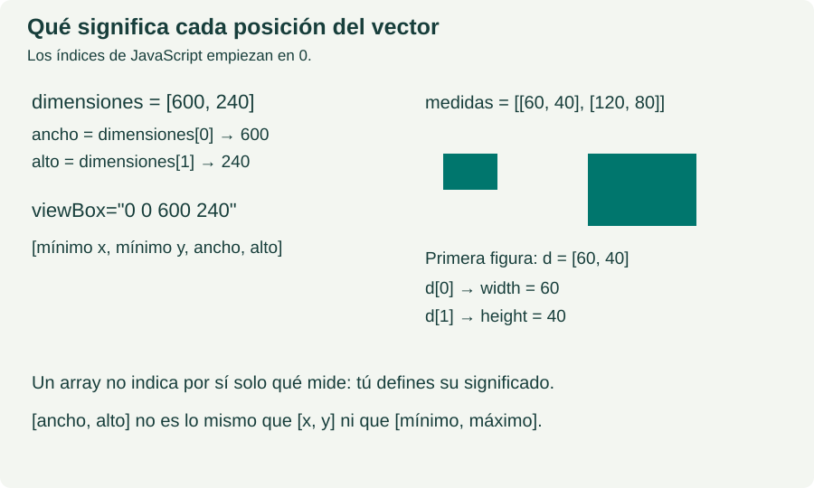

UN ARCHIVO · UN CONCEPTO
svg.viewBox
Define x mínimo, y mínimo, ancho y alto del sistema de coordenadas. No son necesariamente píxeles CSS.
El HTML define el dibujo inicial. El .js solo cambia un atributo para comparar ambos resultados. Comenta esa instrucción y recarga para ver el estado original.
Sintaxis
Antes de usar el DOM del navegador
document representa esta página. document.querySelector("selector CSS") busca la primera coincidencia y devuelve el nodo del navegador, o null si no existe. No devuelve una selección D3. En este ejemplo el nodo ya está escrito en el HTML.
Si todavía no conoces esta instrucción, lee primero document.querySelector y querySelectorAll. La propiedad textContent escribe texto de un nodo; los métodos de esta ficha se llaman directamente sobre el nodo encontrado.
const ventana = [0, 0, 1000, 360];
const svg = document.querySelector("#demo svg");
const texto = ventana[0] + " " + ventana[1] + " " + ventana[2] + " " + ventana[3];
svg.setAttribute("viewBox", texto);Qué significa cada medida. El vector [mínimo x,mínimo y,ancho,alto] define la ventana de coordenadas internas. No es [x1,y1,x2,y2] y no fija por sí solo los píxeles CSS mostrados.
Resultado esperado: viewBox="0 0 1000 360"; el rectángulo conserva width=150 y height=80.
Ejemplo SVG
Código JavaScript y resultado del ejemplo de svg.viewBox.
HTML inicial dentro de #demo
<svg viewBox="0 0 500 180" role="img" aria-label="Ejemplo de viewBox">
<rect x="20" y="20" width="150" height="80" fill="teal"/>
</svg>JavaScript del ejemplo
// [mínimo x, mínimo y, ancho, alto], en ese orden.
const ventana = [0, 0, 1000, 360];
const svg = document.querySelector("#demo svg");
const texto = ventana[0] + " " + ventana[1] + " " + ventana[2] + " " + ventana[3];
svg.setAttribute("viewBox", texto);
document.querySelector("#salida").textContent = "viewBox: " + texto;Cómo leerlo, paso a paso
Cómo se interpreta el ejemplo. Con [0,0,1000,360], x recorre 0 a 1000 e y de 0 a 360. El rectángulo sigue midiendo 150 × 80 unidades internas. Si el tamaño mostrado se mantiene y duplicas ancho y alto del viewBox, la figura se ve a la mitad de escala.
Conexión con los vectores. Los índices empiezan en 0. Antes de aplicar un array, define si sus posiciones contienen coordenadas, tamaños, radios o datos. width y height necesitan una longitud cada uno; una pareja completa no es un único ancho. Consulta vectores y dimensiones.

Edita js/svgviewbox.js para cambiar el cálculo y recarga el HTML. El bloque de código mostrado es una copia para leer. Las etiquetas y los atributos iniciales se encuentran en el propio HTML.
Práctica
1. Cambia la ventana a [0,0,500,180] y compara el tamaño visible. Después cambia solo el mínimo x a 100 y observa qué región se muestra.
2. Relaciona cada número del código con una medida o propiedad visible. Cambia uno y comprueba tu predicción.
Cambia una sola medida cada vez. Predice primero el resultado, recarga y compáralo con tu predicción.